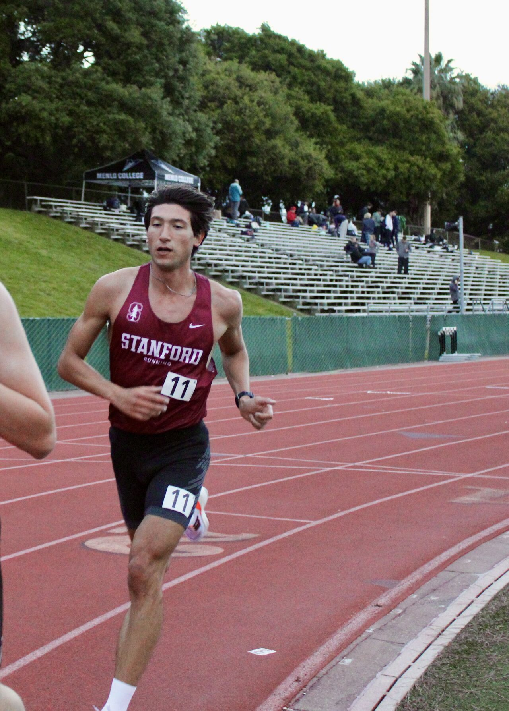

Architecting the Infrastructure for Large-Scale AI Systems
I build the resilient, high-throughput networking and orchestration layers required to scale multimodal AI inference and distributed computation. I am a Postdoctoral Researcher at the University of Pisa and currently serve as an Affiliate Researcher at Stanford University (CCRMA). I received my Ph.D. cum laude focusing on resilient data-driven networking.
The next barrier in AI is not algorithmic; it is infrastructural. My work bridges high-performance networking, machine learning, and systems architecture to solve the hard bottlenecks of large-scale intelligence. I use demanding real-world testbeds—from zero-latency networked audio and real-time enterprise cybersecurity—to build systems that execute complex inferences when bandwidth, latency, and synchronization are critical constraints.
Scaling real-time intelligence requires moving beyond static hardware topologies to dynamic, zero-latency architectures. I build the operating systems, the routing logic, and the network orchestration layers that allow thousands of models and agents to collaborate seamlessly across the edge-cloud continuum.
Career Highlights & Awards
AwardPh.D.Defended Ph.D. Thesis on Resilient Networking for 6G and LEO Satellites, graduating cum laude (Pisa, 2026).
AwardFinalistSelected as World Finalist for the IEEE ComSoc Four Minute Thesis (4MT) Competition at IEEE Globecom 2025.
GrantWinnerAwarded Research Grant for Abroad Mobility (CARIPT Funding) for Stanford University fellowship (2024).
GrantsWinnerTravel Grant Winner for ACM SIGCOMM (2025), IEEE Internet of Sound (2025), and IEEE CAMAD (2024).
Research Areas & Complete Publications
Pioneering literature across the foundational pillars of the next-generation AI infrastructure (28 Peer-Reviewed + 1 Book Chapter).
AI Infrastructure & Large-Scale Networking
A Comprehensive Survey on Software-Defined Wide Area Network
S. Troia, L. Borgianni, S. Giordano, G. Maier
IEEE Communications Surveys & Tutorials, July 2025 Journal
Quantum Networking for Secure and Reliable Communication in Space Exploration
L. Borgianni, D. Adami, S. Giordano
IEEE Communications Magazine, October 2024 Journal
Enhancing Reliability in Rural Networks Using a Software-Defined Wide Area Network
L. Borgianni, D. Adami, S. Giordano, M. Pagano
Computers, April 2024 Journal
Evaluating LEO Satellite Internet in Aeronautical Mobility: a Study of Starlink from Hawaii to Japan
L. Borgianni, D. Adami, S. Giordano
IEEE ICNC, February 2026 Conference
Policy-Driven SD-WAN for Hybrid Terrestrial and Non-Terrestrial 6G Connectivity
L. Borgianni, E. Bellini, A. Giorgetti, D. Adami, S. Giordano
IEEE ICNC, February 2026 Conference
A First Look at Starlink In-Flight Performance: An Intercontinental Empirical Study
M. Asad Ullah, L. Borgianni, H. Kokkinen, A. Anttonen, S. Giordano
IEEE ComComAp, December 2025 Conference
Proximal Policy Optimization for AI-Orchestrated SD-WAN in Underserved Regions
L. Borgianni, D. Ghadir, S. Ghadir, D. Adami, S. Giordano
IEEE NFV/SDN, November 2025 Conference
Decentralized Intelligence for Centralized Control: Multi-Agent Reinforcement Learning for SD-WAN
E. Khanlari, L. Borgianni, D. Adami, S. Giordano
IEEE CNSM, October 2025 Conference
On the Accuracy of Mininet: Comparing Network Emulation and Physical Testbeds for Distributed Systems
L. Borgianni, C. Bua, E. Coli, D. Adami, S. Giordano
ICUMT, October 2025 Conference
Global Net Equity: The Role of LEO Satellites Towards 6G Connectivity Landscape
L. Borgianni, D. Adami, S. Giordano, C. Chafe
IEEE MedComNet, June 2025 Conference
Towards 6G: Adaptive and Resilient Network Management for Hybrid Terrestrial-Satellite Systems
L. Borgianni, D. Adami, S. Giordano
IEEE NOMS, May 2025 Conference
Enhancing Wildlife Monitoring in Variable Network Coverage Areas with Deep RL-based SD-WANs
L. Borgianni, C. Bua, S. Ghadir, D. Ghadir, D. Adami, S. Giordano
IEEE CAMAD, October 2024 Conference
Assessing the Efficacy of Reinforcement Learning in Enhancing Quality of Service in SD-WANs
L. Borgianni, S. Troia, D. Adami, G. Maier, S. Giordano
IEEE GLOBECOM, December 2023 Conference
Optimizing Network Performance and Reliability with an Integrated SD-WAN and Satellite 6G Architecture
L. Borgianni, D. Adami, S. Giordano
IEEE 6GNet, October 2023 Conference
From MPLS to SD-WAN to ensure QoS and QoE in cloud-based applications
L. Borgianni, S. Troia, D. Adami, G. Maier, S. Giordano
IEEE NetSoft, June 2023 Conference
Low-Latency Multimodal AI
A Comprehensive Evaluation of Networked Music Performance using LEO Satellite Internet: The Starlink Use Case
L. Borgianni, D. Adami, M. Bosi, S. Giordano, C. Chafe
IEEE Transactions on Network and Service Management, July 2025 Journal
Democratizing Networked Music Performance with a RL-based SD-WAN
L. Borgianni, S. Giordano, C. Chafe
IEEE Communications Magazine, December 2024 Journal
Reconstructing the Sound at the Edge: A Low-Latency Framework for NMP with Autotuned Local Synthesis
L. Borgianni, C. Bua, D. Adami, S. Giordano
IEEE IS2, October 2025 Conference
Experimental Analysis of Sub-GHz RF Communication for in-Water Wearables in Swimming Applications
L. Borgianni, L. Boggioni, L. Monti, S. Giordano, S. Saponara, A. Caiti, et al.
IEEE STAR, September 2025 Conference
Spectrogram Based Bee Sound Analysis with DNNs: a step toward Federated Learning approach
L. Borgianni, M. S. Ahmed, D. Adami, S. Giordano
Internet of Sounds, October 2023 Conference
Distributed AI Systems
Drone OPERA: An ns-3 energy-aware module for on-board computing in UAV ad hoc networks
M. Della Bartola, L. Borgianni, D. Adami, S. Giordano
Ad Hoc Networks, Elsevier, May 2026 Journal
Reinforcement Learning-Driven Digital Twin for Zero-Delay Communication in Smart Greenhouse Robotics
C. Bua, L. Borgianni, D. Adami, S. Giordano
Agriculture, June 2025 Journal
A Scalable Framework for Deploying AI-Powered Wildlife Monitoring in Resource-Limited Field Environments
M. A. Rahman, T. M. Berhe, L. Borgianni, M. S. Ahmed, C. Bua, et al.
IEEE Access, January 2025 Journal
Monitoring Wildlife in Remote Areas through LEO Satellites within a Cloud Continuum Perspective
M. A. Rahman, L. Borgianni, E. Marku, S. Mathew, O. Navadehrazi, E. Coli, D. Adami, S. Giordano
IEEE GLOBECOM, December 2025 Conference
Efficient Distributed DNN for Extreme Edge Computing in Wildlife Monitoring
L. Borgianni, C. Bua, E. Coli, D. Adami, S. Giordano
IEEE HPSR, May 2025 Conference
Towards a made-in-Europe ecosystem for multisport training, healthy lifestyle and remote patient monitoring
L. Borgianni, M. Ottella, R. Heer, J. Montiel-Nelson, D. P. Pau, R. Proietti, et al.
SSI, April 2025 Conference
Digital Twin for Remote Control of Robotic Arm via Wearable Glove in Smart Agriculture
C. Bua, L. Borgianni, D. Adami, S. Giordano
IEEE WCNC, March 2025 Conference
Empowering Remote Agriculture: Wearable Glove Control for Smart Hydroponic Greenhouses
C. Bua, L. Borgianni, D. Adami, S. Giordano
IEEE HPSR, July 2024 Conference
Book Chapter
E.T. Telefono a Fibra ottica
L. Borgianni, co-author
La facoltà di scegliere, edited by Giulio Deangeli, Mondadori, January 2024. ISBN: 978-8804774464 Book
Systems Architecture & Experience
Engineering real-world infrastructure for strict-latency and high-throughput AI applications.
Research & Industrial Experience
Postdoctoral Researcher
University of Pisa
Architecting the computational pipelines to execute Machine Learning for automated Tracheal Acoustic Monitoring (TAM project) with Stanford Medicine. Solving synchronization and real-time processing constraints for multimodal clinical streams.
04/2026 - Present
Affiliate Researcher
Stanford University, CCRMA
Continuing the collaboration established during the visiting Ph.D. fellowship, focusing on advanced signal processing and AI for low-latency networked applications.
05/2026 - Present
R&D Engineer & WP8 Leader: Distributed Edge AI
Xtremion / Horizon Europe "EU-TRAINS"
Leading the design of distributed architectures for wearable intelligence within the EU-TRAINS project, enabling real-time technique synthesis and inference allocation under constrained bandwidth.
11/2025 - Present
Technical Director: Zero-Trust AI Security
Kalliope Srl / PE SERICS Program (PNRR)
Directed the GATE project. Built an advanced virtual PBX platform executing deep neural networks in real-time to detect generative voice deepfakes and vishing, achieving zero-trust security on enterprise VoIP streams.
Developed distributed AI and networking architectures for real-time multimedia systems. Orchestrated Networked Music Performance over volatile LEO satellite links (Starlink), stressing the absolute limits of packet synchronization.
03/2024 - 08/2024
Academic Courses & Seminars
ITS Pisa
Cybersecurity and Voice Protection (GATE Project)
ITS Academy Prodigi · 2026 · 12 hours Lecture Series
Guest Lecturer
Stanford
Can Musicians Play Together Over Satellite Internet? The Starlink case
Stanford University · Seminar, Class 220C · May 2025
Invited Speaker
UNIPI
Cloud and IoT Solutions: MQTT, FPGA, and AWS Cloud
University of Pisa · Networking Course Seminar · Dec 2024
Seminar Speaker
UNIPI
Network Metrology (Mininet) & FPGA Architectures
University of Pisa · Core M.Sc. Networking Courses · 40h/year (2022-2025)
Teaching Assistant
UNIPI
Mathematical Analysis 1
University of Pisa · B.Sc. Course · Sep 2021 - Dec 2022
Teaching Assistant
Supervised Student Theses (9)
"Dynamic tunnel Selection in SD-WAN using PPO-based Reinforcement Learning" — Delaram Ghadir (M.Sc.)
"Deep Q-Learning for Enhanced SD-WAN Performance and Reliability in Rural Areas" — Setayesh Ghadir (M.Sc.)
"SDN Traffic Optimization Using RYU and Reinforcement Learning" — Muhammad Ameen Uddin (M.Sc.)
"Dynamic Overlay Selection in SD-WAN Using Reinforcement Learning: A Collaborative Multi-Agent Approach" — Elshan Khanlari (M.Sc.)
"Emulating and Evaluating Starlink-like LEO Satellite Networks Using Mininet and Real-Time Traffic Traces" — Sagar Kumar (M.Sc.)
"Federated Learning in Drone Networks with Digital Twin Modeling" — Matteo della Bartola (M.Sc.)
"SD-WAN for 6G: an SDN architecture for integrating Terrestrial and Non-Terrestrial Networks" — Eleonora Bellini (B.Sc.)
"Graph Neural Network for Adaptive Control of Olive Tree Water Stress" — Antonio Masu (B.Sc.)
"Semantic Communication at the edge for wildlife surveillance" — Federico Cheli (M.Sc.)
Presentations & Academic Service
Spreading the vision of distributed runtime systems across 25 global scientific engagements.
Academic Leadership & Service
CHAIR
Track Chair & Session Chair
Track 4 "AI-Native Connectivity" at IEEE COINS 2026 (Bologna) "Emerging Topics" at IEEE Globecom 2025 (Taipei)
Appointed Regional Representative for Young Professionals in Europe, Middle East, and Africa (2026-Present).
OUTREACH
STEM UP Project & Pre-University Speaker
Expert researcher for High School STEM orientation (2026). Speaker on Embedded AI at IEEE ICC 2025 & Globecom 2025.
Invited Talks, Pitches & Paper Presentations
05/2026Invited PitchIEEE ICC 2026 (Glasgow):"Semantic Communication Framework for Deepfake Voice Detection" (Selected Top 6 presenter).
05/2026PaperIEEE NOMS 2026 (Rome):"An AI-Driven SD-WAN Deployment for LEO Satellite and Terrestrial Network Integration".
01/2026OralINW 2026 (Bardonecchia):"Semantic Experiences in the Wild".
12/2025PaperIEEE Globecom 2025 (Taipei):"Monitoring Wildlife in Remote Areas through LEO Satellites within a Cloud Continuum Perspective".
12/2025FinalistIEEE Globecom 2025 (Taipei):"Towards Reliable Networks: SD-WAN with LEO Satellites for Real-Time Applications" (4MT Competition).
10/2025PaperIEEE NFV/SDN (Athens):"Proximal Policy Optimization for AI-Orchestrated SD-WAN in Underserved Regions".
10/2025PaperIEEE IS2 (L'Aquila):"Reconstructing the Sound at the Edge: A Low-Latency Framework for NMP with Autotuned Local Synthesis".
10/2025PaperIEEE CNSM (Bologna):"Decentralized Intelligence for Centralized Control: Multi-Agent RL for SD-WAN".
09/2025PosterMeeting GTTI (Bologna):"Low-Latency Jamming via LEO: Measuring Starlink for Networked Music Performance".
07/2025PaperIEEE MedComNet (Nice):"Global Net Equity: The Role of LEO Satellites Towards 6G Connectivity Landscape".
05/2025PaperIEEE HPSR (Osaka):"Efficient Distributed DNN for Extreme Edge Computing in Wildlife Monitoring".
05/2025PaperIEEE NOMS (Honolulu):"Towards 6G: Adaptive and Resilient Network Management for Hybrid Terrestrial-Satellite Systems".
05/2025Invited TalkStanford University (USA):"Can Musicians Play Together Over Satellite Internet? The Starlink case".
04/2025Panel10th Workshop on Molecular Communications (Catania): Panel Session on Future Trends: "6G and Beyond".
01/2025OralINW 2025 (Moena):"A Comprehensive Evaluation of Networked Music Performance using LEO Satellite Internet: The Starlink Use Case".
10/2024PaperIEEE CAMAD (Athens):"Enhancing Wildlife Monitoring in Variable Network Coverage Areas with Deep RL-based SD-WANs".
06/2024OralMedComNet (Ponza):"Overcoming TCP challenges in SD-WAN with an Adaptive Reinforcement Learning Approach".
05/2024PosterCCRMA, Stanford University:"Democratizing Networked Music Performance with a RL-based SD-WAN".
01/2024InstitutionalSenato della Repubblica Italiana: Invited Institutional Speech.
01/2024OralINW 2024 (Madonna di Campiglio):"Democratizing Networked Music Performance with SD-WAN".
10/2023PosterInternet of Sound (Pisa):"Spectrogram Based Bee Sound Analysis with DNNs".
10/2023PaperIEEE 6GNet (Paris):"Optimizing Network Performance and Reliability with an Integrated SD-WAN and Satellite 6G Architecture".
09/2023PosterMeeting GTTI (Roma):"Reinforcement Learning-Based Approaches for Tunnel Selection and TCP Parameter Optimization in SD-WAN".
06/2023OralTMA Conference (Turin):"Enhancing Quality of Service in SD-WAN through Reinforcement Learning-based TCP Congestion Control".
06/2023PaperIEEE NetSoft (Madrid):"From MPLS to SD-WAN to ensure QoS and QoE in cloud-based applications".
Human Performance & Multimedia
Stress-testing the limits of human endurance and the physics of sound.
📺 Triathlon Italia & Sports Tech Community
I am the founder of Triathlon Italia, a digital community bridging endurance training and sports technology. Managing an active audience of over 10,000 members, I analyze wearable telemetry, biomechanical data, and race performance. This experience proves my ability to communicate complex data, build a large-scale brand, and turn human performance into actionable metrics.
YouTube
Triathlon Italia (10k+ Members)
Reference channel for triathlon · Training culture, race stories, and sports tech analytics.
My background in competitive swimming (Fiamme Oro youth group) and triathlon fundamentally shapes my engineering mindset. Competing at regional and national levels demands the same meticulous optimization of energy, efficiency, and real-time adaptation that I now apply to distributed computing systems.

Selected Race Results
20192nd overall, Duathlon Pisa
20192nd overall, Triathlon Sprint Tirrenia
20211st overall, Triathlon Sprint Empoli
20212nd overall, Triathlon Olimpico Castiglione della Pescaia
20221st overall, Triathlon Sprint Lago Brasimone
20221st overall, Aquathlon Città di Chioggia
20224th in category, Ironman 70.3 Poreč
20233rd overall, Triathlon Olimpico Marina di Castagneto Carducci
FITRI
Triathlon Instructor
FISA
Lifeguard Patent
WASE
Sub Open Patent
🎵 Audio Synthesis & Music
I am a songwriter and acoustic guitar player, having published original music on YouTube and Spotify. This intrinsic connection to the physics of sound and musical composition directly drives my academic pursuit of Networked Music Performance and real-time audio reconstruction at the edge of the network.